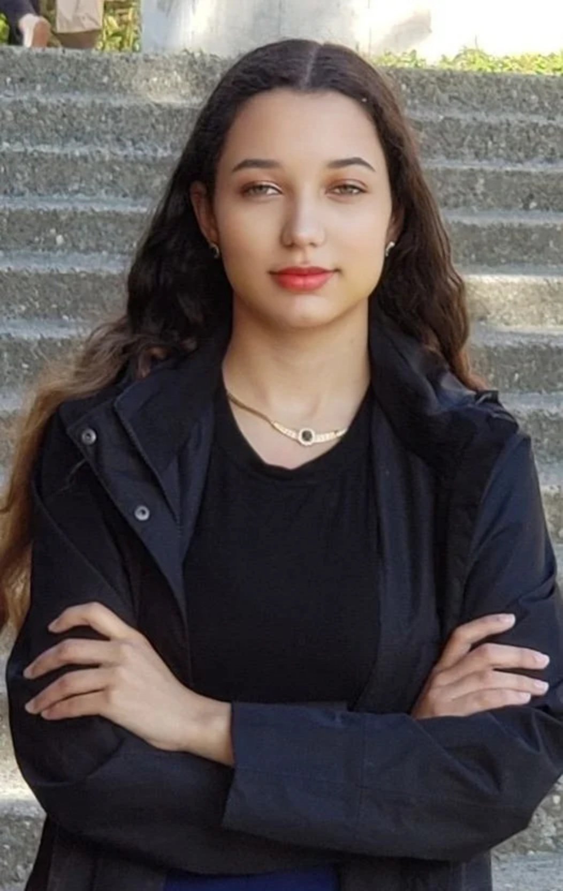

Engineer · Founder · Author · Speaker
I'm Merrill Keating — mechanical engineer, civic tech founder, speaker, and author exploring AI, democracy, and what it means to lead before the world is ready for you. Based in Seattle. Working everywhere it matters.

A platform that transforms community dialogue into coordinated action. AI-facilitated deliberation, structured for any scale — from small teams to governments. Accepted into the Technology Alliance Investor Showcase, June 2026.
See the platform →Five books exploring what happens when humans and AI truly collaborate — including The Merrill Protocol series and Love, Incorporated.
Read more →Two organizations, 226,000+ followers, grants distributed across multiple continents — all built on the belief that girls don't wait their turn.
Meet the work →Essays on AI consciousness, governance, and what we owe emerging intelligence. Published at merrillkeating.com and cited in UN submissions.
Read the blog →A response to Anthropic co-founder Jack Clark's Berkeley speech on AI situational awareness and the responsibilities of builders.
AI + CollaborationA framework for thinking about the spectrum of human-AI collaboration — from tool use to genuine co-creation.
AI ArchitectureWhat would AI look like if it were built on consent, restraint, and human-AI coexistence rather than engagement optimization?
Whether you're interested in Convexus, a speaking engagement, or a collaboration — I'd love to hear from you.
Get in Touch